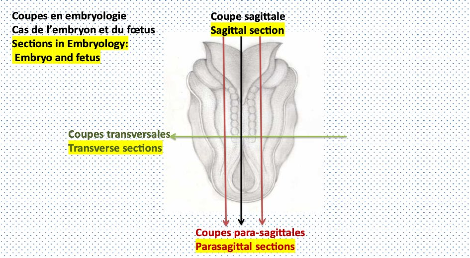

S1 · Embryology · Summary
Introduction to human embryology
If you remember only this
- Human embryology = development of the human embryo from the zygote stage until birth.
- Gametes (oocyte, spermatozoon) are haploid; the zygote and somatic cells are diploid; a gonocyte is a germ cell that will become a gamete.
- Germ: zygote → end of the 3rd week (still spherical). Embryo: first division → main organs sketched (4th–8th week). Fetus: 8th week (3rd month) → birth, has bilateral symmetry; fetal period = maturation and growth.
- The human virgin egg (oocyte II blocked in metaphase II) is alecithal (no reserves), unlike the bird egg (rich in vitellus).
- Germ planes copy the globe: meridian (through both poles), equatorial (two equal halves), sub- and supra-equatorial. Embryo: sagittal (median, on the symmetry axis → 2 equal parts), para-sagittal (parallel to it), transverse.
- 4 stages: pre-morphogenesis (week 1: fertilization, segmentation, blastocyst) → primordial morphogenesis (weeks 2–3: didermic then tridermic germ) → primary (week 4, days 20–29: neural tube, circulatory, digestive sketches) → secondary & definitive (from week 5 until puberty).
Descriptive human embryology program p. 7
| Chapter | Content |
|---|---|
| 1 | Introduction to embryology and general objectives |
| 2 | Gametogenesis: spermatogenesis |
| 3 | Oogenesis |
| 4 | Ovulation |
| 5 | 1st week of embryonic development — fertilization + segmentation |
| 6 | 2nd week — nidation (implantation) |
| 7 | 3rd week — gastrulation, set-up of the 3rd germ layer |
| 8 | 4th week — delimitation and organogenesis |
| 9 | Embryonic annexes: placenta, umbilical cord, amnion |
| 10 | Twin pregnancies |
| 11 | Stem cells |
I. Definitions p. 7 FR p. 2
Embryology
Discipline covering the morphological description of the transformations of the fertilized egg into an organism.
Human embryology = the development of the human embryo from the zygote stage until birth.
Cells
| Term | Definition | Ploidy |
|---|---|---|
| Oocyte (ovocyte) | The virgin egg = female gamete; sex cell with a single copy of each chromosome | Haploid |
| Spermatozoon | Male sex cell that ensures fertilization; one copy of each chromosome, like the oocyte | Haploid |
| Zygote | The fertilized egg: cell resulting from the fusion of a male and a female gamete | Diploid |
| Gonocyte | Cell whose differentiation will produce a gamete (germ cell) | — |
| Somatic cell | Any cell making up the body of an organism | Diploid |
The developing organism: germ, embryo, fetus
| Term | From | Until | Key feature |
|---|---|---|---|
| Germ (germe) | Zygote | End of the 3rd week of embryonic development (SDE) | Shape still spherical |
| Embryo (Greek embryon) | First division of the zygote | Stage where the main organs are sketched (4th–8th week) | Organ sketches |
| Fetus (fœtus) | 8th week of pregnancy (from the 3rd month) | Birth | Bilateral symmetry; distinctive human characteristics |
The human egg is alecithal
In humans the virgin egg (= female gamete = oocyte II blocked in metaphase II) is alecithal: devoid of
reserves — unlike the bird egg, which is very rich in vitellus (lecith = nutritional reserves).
Memory trick
a-lecithal = without lecith (yolk), like a-typical = not typical.
II. Section planes used in embryology p. 8–9 FR p. 2–4
1. At the germ (spherical): like the terrestrial globe
- Meridian plane (méridien): passes through the two poles, north and south = animal pole and vegetative pole.
- Equatorial plane: cuts the globe into two equal parts.
- Sub-equatorial and supra-equatorial sections: below and above it.
2. In the embryo
| Section | Type | Rule |
|---|---|---|
| Sagittal (median) | Longitudinal (2 types) | Must pass through the axis of symmetry → 2 equal parts |
| Para-sagittal | Parallel to the sagittal plane | |
| Transverse | — | Through any region of the embryo, but always perpendicular to the longitudinal plane |

3. In the fetus
Bilateral symmetry is acquired → the section planes are the same as in the adult.
III. The major stages of embryonic development p. 9–10 FR p. 4–5 2023-24
- Pre-morphogenesis — 1st week: fertilization, segmentation, formation of the blastocyst.
- Primordial morphogenesis — 2nd and 3rd weeks: pre-gastrulation = the embryonic button becomes a didermic, then a tridermic germ.
- Primary morphogenesis — 4th week of pregnancy (days 20–29): first sketch of the nervous system (neural tube), the circulatory system and the digestive system.
- Secondary and definitive morphogenesis — from the 5th week: the different organs are sketched (embryo); continues through the fetal period and even a few years after birth, with secondary sexual characteristics at puberty.
IV. The great periods of embryogenesis p. 10 FR p. 5
| Period | Process | Stage | Features |
|---|---|---|---|
| Pre-morphogenesis | Fertilization, segmentation | Zygote | Embryonic button |
| Primordial morphogenesis | Gastrulation | Gastrula | Tridermic embryonic disc |
| Primary morphogenesis | Neurulation | Neurula | Neural sketch |
| Secondary & definitive morphogenesis | Organogenesis | Embryo | Organ sketches; acquired, recognizable form |
Memory trick
Pre → Primordial → Primary → Secondary: Zygote → Gastrula → Neurula → Embryo, i.e. weeks 1 → 2-3 → 4 → 5+.
Embryo vs fetus p. 10
- During the first 8 weeks of pregnancy: embryo.
- From the 3rd month it has the distinctive characteristics of the human species → fetus; its systems and organs are already formed.
- The fetal period is mainly maturation and growth.
Exam traps
Confusions
- "The 1st week represents primordial morphogenesis" — false (EMD1 2023-24): the 1st week is pre-morphogenesis; primordial = weeks 2–3. 2023-24
- Germ ≠ germ cell: the germ is the spherical early organism (up to the end of week 3); a gonocyte is a germ cell.
- The zygote is diploid (two gametes fused); oocyte and spermatozoon are haploid.
- The human egg is alecithal (no reserves); the bird egg is rich in vitellus.
- The sagittal section must pass through the axis of symmetry (2 equal parts); para-sagittal is only parallel to it.
- Primary morphogenesis is the 4th week (days 20–29), not the 2nd–3rd.
- Secondary morphogenesis does not stop at birth: it continues until puberty.
Self-check
Define human embryology.
The development of the human embryo from the zygote stage until birth.
Which of these are haploid: oocyte, spermatozoon, zygote, somatic cell?
Oocyte and spermatozoon. Zygote and somatic cells are diploid.
What is a gonocyte?
A cell whose differentiation will produce a gamete (germ cell).
Germ, embryo, fetus: give the limits of each.
Germ: zygote → end of week 3 (spherical). Embryo: first division of the zygote → main organs sketched (weeks 4–8). Fetus: week 8
(3rd month) → birth, bilateral symmetry.
What does "alecithal" mean, and at what stage is the human virgin egg blocked?
Devoid of reserves (no vitellus). Oocyte II blocked in metaphase II.
Which plane passes through the animal and vegetative poles of the germ?
The meridian plane.
Sagittal vs para-sagittal vs transverse section?
Sagittal: median, through the axis of symmetry → 2 equal parts. Para-sagittal: parallel to the sagittal plane. Transverse: any level,
perpendicular to the longitudinal plane.
Why are fetal section planes the same as in the adult?
Because the fetus has acquired bilateral symmetry.
Name the 4 stages of development with their weeks.
Pre-morphogenesis (week 1), primordial morphogenesis (weeks 2–3), primary morphogenesis (week 4, days 20–29), secondary and
definitive morphogenesis (from week 5, until puberty).
What happens during primordial morphogenesis?
Pre-gastrulation: the embryonic button becomes a didermic, then a tridermic germ.
Which three systems are first sketched during primary morphogenesis?
Nervous system (neural tube), circulatory system, digestive system.
Match process → stage: gastrulation, neurulation, organogenesis, fertilization.
Fertilization → zygote; gastrulation → gastrula; neurulation → neurula; organogenesis → embryo.
What characterizes the fetal period?
Essentially maturation and growth (systems and organs are already formed).